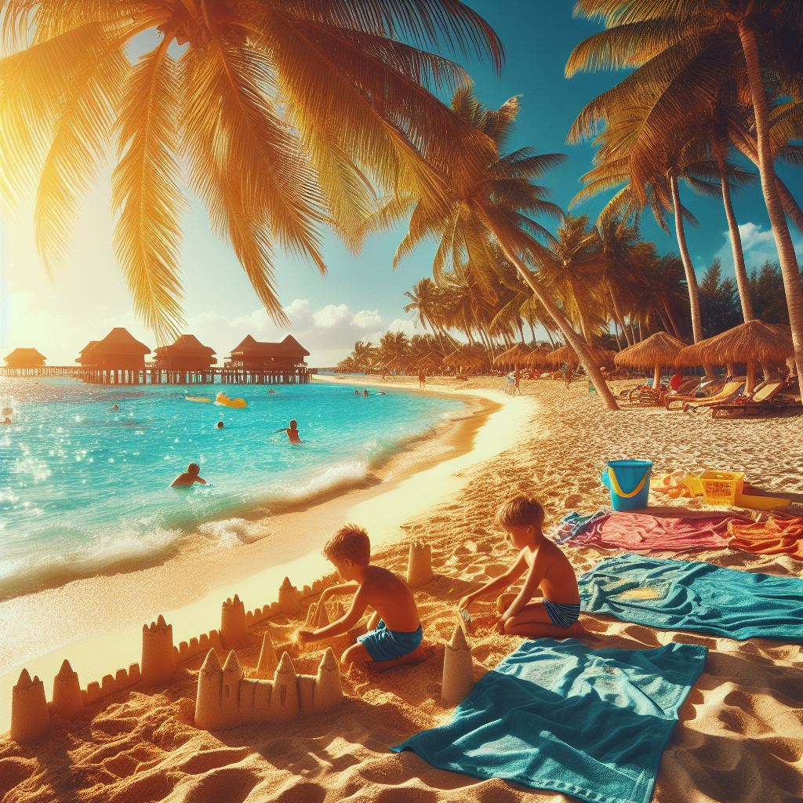
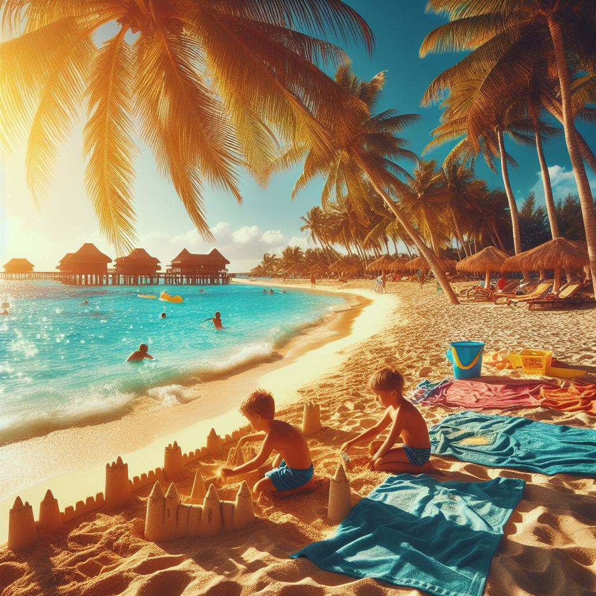

El verano es una de las estaciones más calurosas y vibrantes del año, conocida por sus días largos y soleados. Es un momento en el que la naturaleza está en plena efervescencia, con árboles frutales que dan sus mejores cosechas, campos llenos de flores y vegetación exuberante, y playas y parques que se convierten en destinos populares para vacacionar. Las altas temperaturas del verano suelen ser ideales para actividades al aire libre como nadar, hacer caminatas, acampar y disfrutar de comidas al aire libre con amigos y familiares.
El verano también es una época de cambios en la vida animal, con muchas especies que aprovechan las condiciones favorables para reproducirse y criar a sus crías. Los días más largos y las noches más cortas ofrecen más horas de luz solar, lo que a su vez puede afectar los patrones de sueño y actividad de las personas. En muchas culturas, el verano está asociado con festivales y celebraciones que marcan el inicio de la temporada de cosecha y la abundancia de alimentos frescos y nutritivos.


Sin embargo, el verano también puede traer consigo desafíos, como olas de calor intensas que pueden ser peligrosas para la salud, especialmente para los grupos vulnerables como los niños pequeños y los ancianos. Además, en algunas regiones, el verano puede ser una época de sequías y escasez de agua, lo que puede afectar la agricultura y el suministro de alimentos. A pesar de estos desafíos, el verano sigue siendo una época esperada y disfrutada por muchas personas en todo el mundo, que encuentran en esta estación una oportunidad para relajarse, disfrutar del aire libre y crear recuerdos duraderos con sus seres queridos.
 
